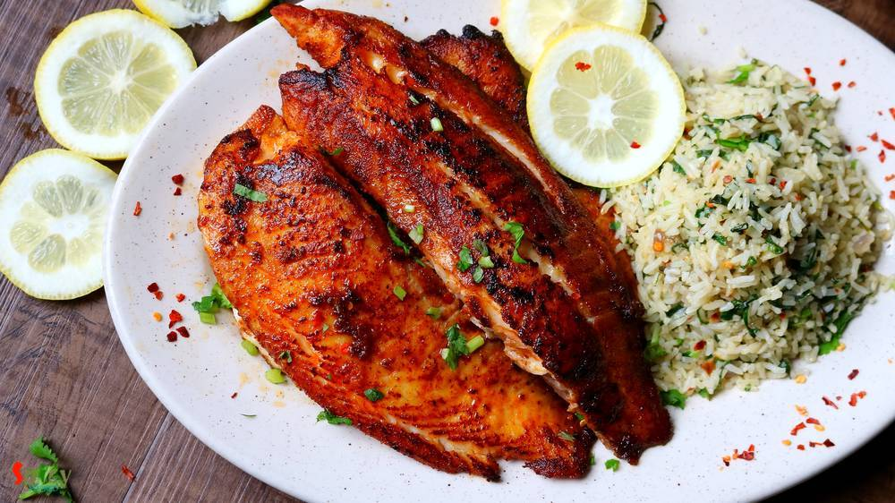

Simple and Easy Recipes
Posts on 'kabab'

Nonveg Recipe
Nov 13, 2019
Whenever I find a new recipe of Kabab, husband says - you should give it a try. As we both are crazy fan of various types of kabab. Attraction of this Banjara kabab is the stuffing. You can call them stuffed kabab also. The recipe is very simple and easy. You should give it a try.


Nonveg Recipe
May 24, 2019
During summer everybody wants to spend less time in kitchen. Usually I make daal, curry or some veggie stir fried for lunch but the hot, humid weather of Texas is pushing me to cook short and simple meal. Well, how can I not cook something special on weekend? You don't have to stand more than 20 minutes in front of those hot burners to creat this awesome Grilled fish and Spinach rice platter. To m ...

Nonveg Recipe
Jan 18, 2020
This dish dont need any explanation. Its very popular in India and nowadays all over the world. There was a rumor that without "tandoor/oven" you cannot make tandoori. But believe me today I am sharing "oven method and stove top method" of making tandoori chicken. 'Tandoor' means oven made with clay and the heat comes from charcoal. In restaurants the actual tandoor flavour comes when juices of ch ...

Nonveg Recipe
Nov 22, 2018
Hariyali Chicken Kabab is a very delicious variety of kabab in which boneless chicken will be marinated in yogurt, ginger, garlic, mint-coriander paste and lot of fresh spices along with few other ingredients. You can definitely use chicken legs instead of boneless. I will recommend you to use chicken thighs instead of breast pieces, as thighs will come out much more juicy. Hariyali means green co ...

Veg Recipe
Oct 24, 2018
Hara Bhara Kabab is a delicious snack item for all the veggie lovers. Hara means green color. The kabab contains potato, spinach and any type of green colored vegetables like capsicums, beans and peas. Though I have only used spinach today but feel free to add other vegetables also. Like usual Kabab, it is not grilled but fried version. I kept the recipe as simple as possible. Just give it a try a ...

Nonveg Recipe
Jul 12, 2016
In USA, every Indian resturant serves 'chicken tikka masala' and it tastes delicious. I never had it in India, don't know why ? Tikka sized grilled chicken, onion and bell peppers are cooked in a tomato based creamy gravy. After tasting this dish several times in restaurants, last month I thought of making it at home. Few months ago I uploaded the recipe of 'chicken tikka kabab', so I am going to ...

Nonveg Recipe
Jun 6, 2016
Though I ate various types of kabab in India but had no clue about 'chicken shawarma'. I tasted this delicious dish first time in Austin, Texas and now they are available in pretty much all over the world. Shawarma' is a middle eastern kabab preparation which can be made of lamb / chicken / turkey or beef. I had them first time with pilaf and second time with pita bread. My husband and I both fell ...

Nonveg Recipe
May 3, 2016
Few months back I saw a recipe of this 'dhaniya murgh kabab' with boneless chicken in facebook. The picture caught my eyes and then I made my mind to give it a try. But I actually got time to make it last weekend as I already had so many recipes in my drafts and to-do list. There were few changes I make with the recipe and we both got very much impressed by it's result. Smokey flavour of any type ...

Nonveg Recipe
Apr 15, 2016
What can I say about this one? Because again its Kabab!! This malai kabab has very smooth texture and smokey flavour. 'Malai' means cream, usually chicken cubes are marinated with yogurt, cheese, cream and some spices, I also did the same. You will be lost whenever you put that juicy, tendor piece of chicken in your mouth. I am damn sure that these kababs will make your appetite satisfy. Enjoy the ...

Nonveg Recipe
Mar 15, 2016
Do you have some boneless chicken, onion and capsicum in your kitchen?? Then why don't you make some 'tikkas'? Chicken Tikka is a very well known starter or kabab in India. Nowadays it also become popular in the whole world. You can make delicious gravy also with these tikkas. But first you have to make chicken tikka and here is the recipe ..
")
Nonveg Recipe
Dec 11, 2015
I guess many people are not familiar with this name, believe me, I was also not. 'He' is a big fan of kababs, that's why I always try to find new recipes for kababs. This year, on his birthday, I made these 'jali' kababs. The concept and taste were totally new to us. But luckily 'net kabab' brought a big smile on his face and that was my real satisfaction. 'Jali' means net and they have net like t ...

Nonveg Recipe
Oct 28, 2015
Last weekend I made a jar of coriander-mint chutney and kept in for fridge for future purposes. Yesterday 'he' wanted some snacks in the evening and also wanted something new. Usually we serve kababs along with green chutney but I used that green chutney for the marination of the chicken. Believe me it was worth trying and that's the reason I named it 'chutney kabab'.The texture and taste came out ...

Nonveg Recipe
Oct 22, 2015
Nowadays 'kabab' become very popular starter in party menu or restaurant's menu. 'Tangri' means leg piece. When we go to restaurants for dinner, this is our must starter. The taste is completely different from tandoori chicken and you will love it. After today you can make this dish in your own kitchen.

Nonveg Recipe
Oct 3, 2015
Wanna try something new ? Just follow this recipe and get perfect starter for your friday evening. These baked leg pieces will never fail to satisfy your apetite. Try this and surprise your family and guest.